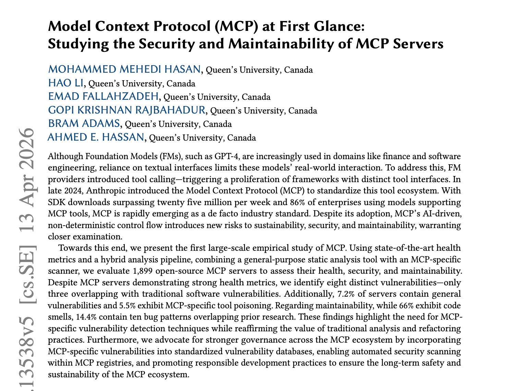

Um protocolo aberto, sobre JSON-RPC, pelo qual um agente descobre e chama ferramentas oferecidas por outro processo.
Um cliente por servidor. Na aula 2 vimos o M × N virar M + N. Hoje, o que vem junto com isso.
O que o agente recebe quando pede tools/list:
{
"name": "cardapio",
"description": "Retorna o cardápio do RU para uma data (AAAA-MM-DD).
Use quando o usuário perguntar o que tem para comer.",
"inputSchema": {
"type": "object",
"properties": { "data": { "type": "string" } },
"required": ["data"]
}
}
from fastmcp import FastMCP import sqlite3 mcp = FastMCP("ru-ufpa") db = sqlite3.connect("ru.db") @mcp.tool def cardapio(data: str) -> str: """Retorna o cardápio do RU para uma data (AAAA-MM-DD). Use quando o usuário perguntar o que tem para comer.""" linhas = db.execute( "SELECT refeicao, prato FROM cardapio WHERE data = ?", (data,) ).fetchall() return "\n".join(f"{r}: {p}" for r, p in linhas) or "Sem cardápio." @mcp.tool def avaliar(prato: str, nota: int) -> str: """Registra uma nota de 1 a 5 para um prato do cardápio.""" db.execute("INSERT INTO avaliacao VALUES (?, ?)", (prato, nota)) db.commit() return "Avaliação registrada." mcp.run() # stdio por padrão
A docstring vira a description. As anotações de tipo viram o inputSchema.
# local, por stdio: o host sobe o processo do servidor claude mcp add ru -- uv run servidor.py # remoto, por HTTP, com login por OAuth claude mcp add --transport http github https://api.githubcopilot.com/mcp/ claude mcp list
Ou versionado na raiz do repositório, em .mcp.json:
{
"mcpServers": {
"ru": { "command": "uv", "args": ["run", "servidor.py"] }
}
}
Com o arquivo no git, a dupla inteira usa o mesmo servidor, e quem clona o repositório precisa aprovar antes do primeiro uso.
Lê código, issues e PRs. Abre PR, comenta, faz merge.
Lê Drive, Gmail e Calendar. Cria arquivo, rascunha e-mail, marca reunião.
Busca músicas, monta playlists, controla a reprodução.
Lê canais e threads. Envia mensagens.
Consulta o banco, aplica migrações, faz deploy de funções.
Abre o navegador, navega, clica, preenche formulários.
Lê frames, componentes e tokens do design.
Lê erros e stack traces de produção.
Para cada um, perguntem: o que ele lê que é meu, o que ele lê que veio de fora, e por onde ele consegue mandar algo para fora.
Repositório privado, caixa de e-mail, banco de produção.
Issue pública, e-mail recebido, página web, linha do banco escrita por usuário.
Abrir PR, mandar mensagem, fazer uma requisição HTTP.
Com as três na mesma sessão, quem escreveu o conteúdo não confiável passa a dar ordens ao agente.
Simon Willison, The lethal trifecta for AI agents, 2025.
O servidor não tinha bug. O problema está na composição: as três pernas da tríade na mesma sessão.
Invariant Labs, GitHub MCP Exploited: Accessing private repositories via MCP, 2025.
O primeiro estudo em larga escala sobre servidores MCP, publicado no TOSEM.
Leiam antes da próxima aula, com atenção às seções sobre tool poisoning. arxiv.org/abs/2506.13538

Um servidor MCP ligado à aplicação que vocês construíram na AP1, para o agente operar a aplicação por ele.
.mcp.json versionado, com allow para a leitura e ask para a escrita, e peçam ao agente uma tarefa que só se resolve usando a aplicaçãodiario/2026-10-08.md quais tools o agente escolheu, onde errou, e qual perna da tríade o servidor de vocês abreCommit no dia. Leitura da semana: MCP at First Glance (arxiv.org/abs/2506.13538). Complementar: MCP, Security Best Practices.